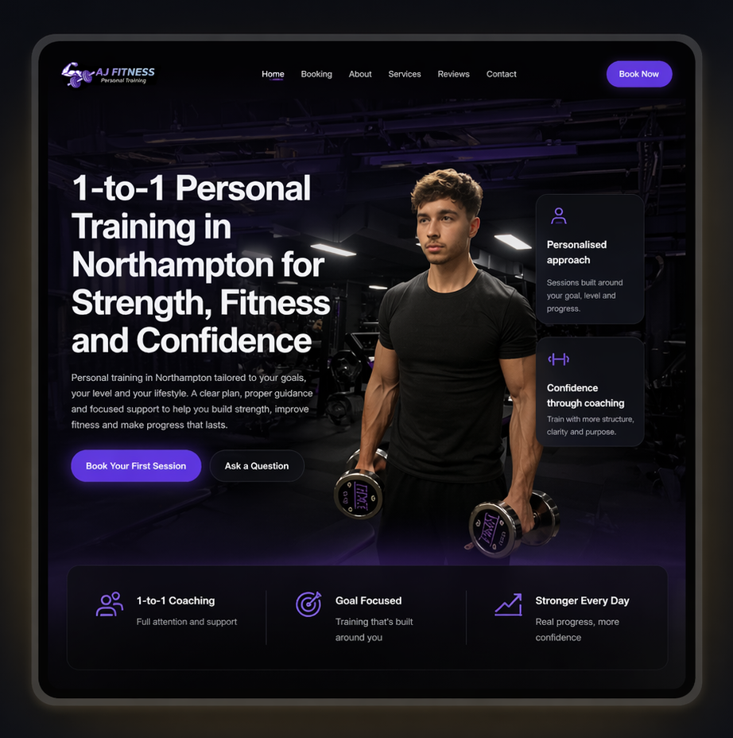
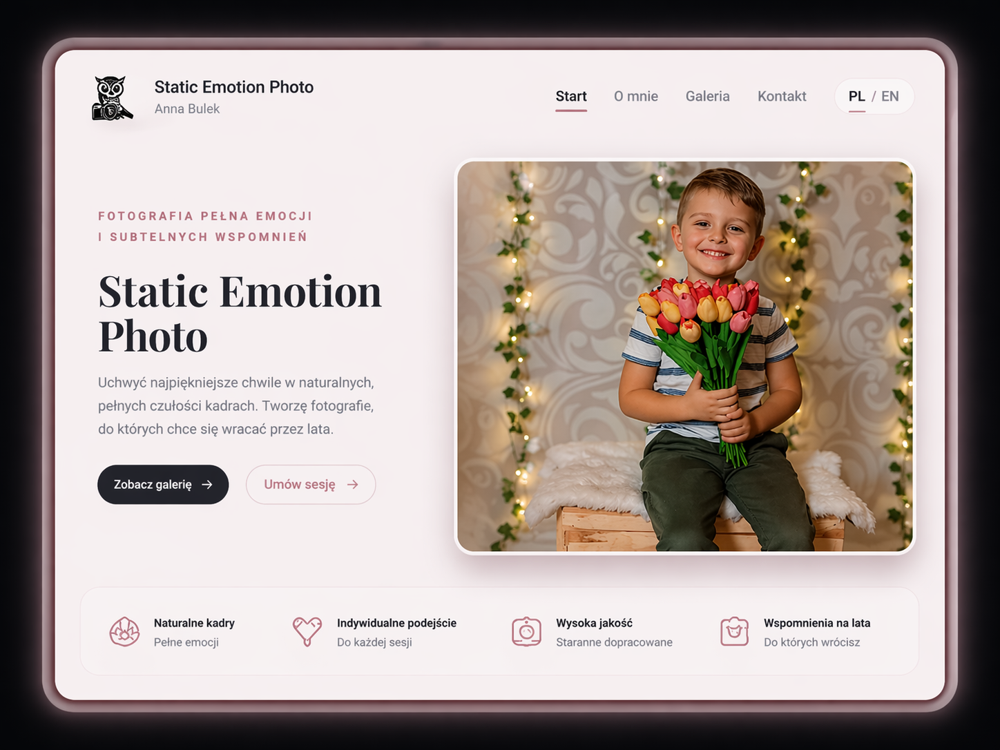
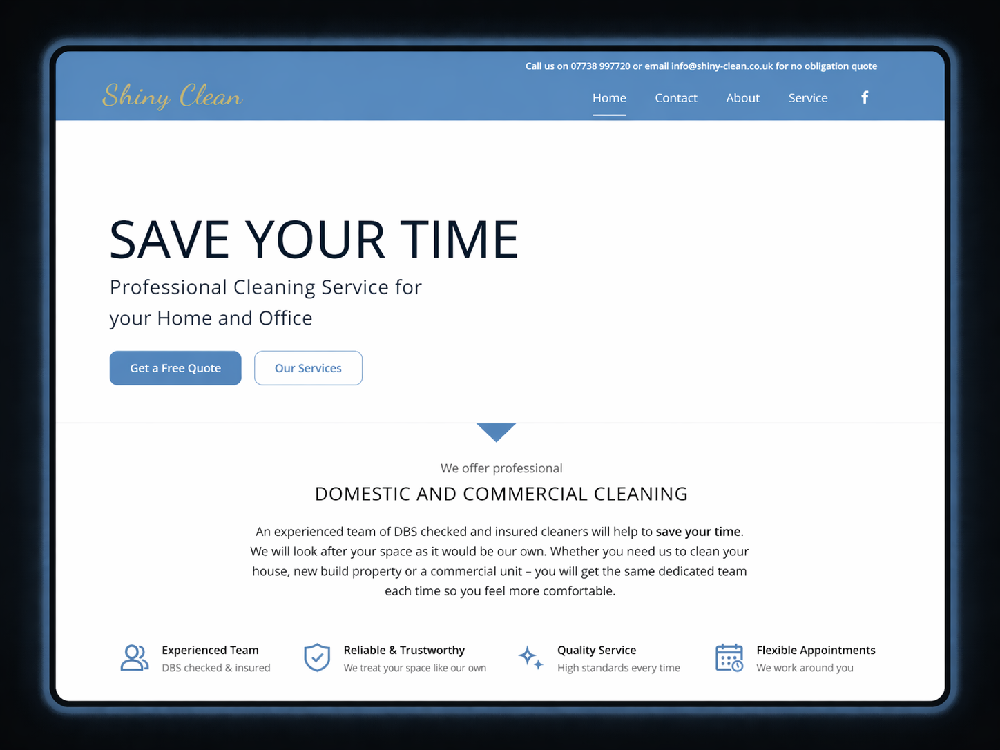

Strona cateringowa premium
Sergio & Robi Pizzeria
Nowoczesna strona cateringowa zaprojektowana tak, aby czytelnie pokazać ofertę i wspierać rezerwacje.
Zobacz stronęProjekty
Przykłady stron klientów zaprojektowanych z naciskiem na branding, przejrzystość i większą liczbę zapytań.
Strona cateringowa premium
Nowoczesna strona cateringowa zaprojektowana tak, aby czytelnie pokazać ofertę i wspierać rezerwacje.
Zobacz stronę
Strona fitness
Wielostronicowa strona dla trenera personalnego skupiona na zaufaniu, przejrzystości i zapytaniach klientów.
Zobacz stronę
Portfolio fotograficzne
Eleganckie portfolio fotograficzne oparte na estetyce, emocjach i spójnym storytellingu wizualnym.
Zobacz stronę

Redesign strony firmy sprzątającej
Kompletny redesign strony — od przestarzałej, prostej wersji do nowoczesnej, estetycznej i bardziej premium prezentacji, która buduje zaufanie i zwiększa liczbę zapytań.
Zaufani klienci
Opinie klientów
★★★★★
Barbara stworzyła nowoczesną, profesjonalną stronę dla mojego biznesu. Wygląda świetnie i już w pierwszych tygodniach przyniosła więcej zapytań.
★★★★★
Strona wygląda elegancko i profesjonalnie, a oferta jest teraz dużo bardziej czytelna. To naprawdę podniosło poziom naszej marki.

★★★★★
Dokładnie to, czego potrzebowałam jako fotograf — elegancka, minimalistyczna strona, skupiona na moich zdjęciach.